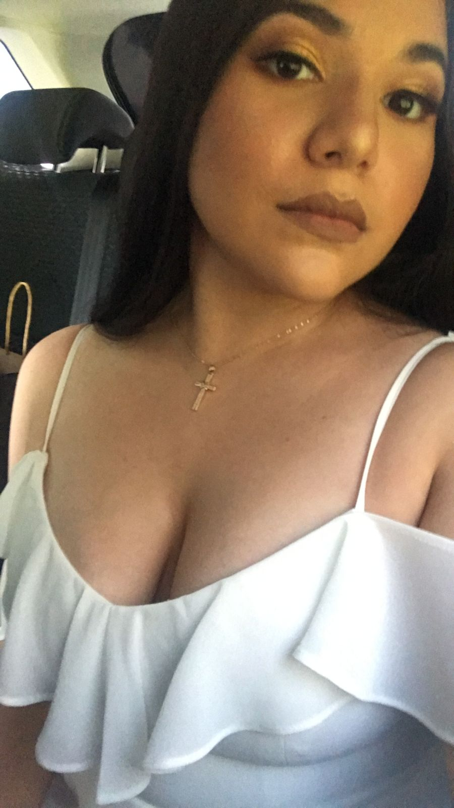

Ana Laura, esta chica tiene 23 años, es muy inteligente, tiene una personalidad única, y un muy buen sentido del humor. Me gusta que ella le gusta leer, cantar, le gusta la música.
Sus cualidades más únicas son:
Recuerdo cuando la conocí porque le respondí unas historias de instagram y ella me empezó a echar el ojo, y ese día la conversación fluyo tanto que sentí que hicimos click, sentí tanta química entre los dos y demoramos como 6 horas en la llamada, esa chica especial está de cumpleaños hoy y la amo mucho, es muy especial para mi.
Ya cumpliste 23 años mi amor, quiero que sepas que te voy a apoyar en lo que pueda y te voy a proteger con mi vida.
Ella sube fotos bonitas en su insta y yo la lujureo insta del primor